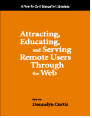

|  |
| About IR |
| Editors |
| Author instructions |
| Copyright |
| Author index |
| Subject index |
| Search |
| Reviews |
| Register |
| Home |
Curtis, Donnelyn (ed.) Attracting, educating, and serving remote users through the Web: a how-to-do-it manual for librarians. London: Facet Publishing, 2002. 269 p. ISBN 1-85604-461-0. £34.95
The changing role of a library in the wired society is a big theoretical and practical issue. It attracts much attention from the professional community on different levels and results in multiple discussions. The book written by a team of librarians from the University of Nevada, Reno, translates this issue into guidelines of overall development of Web-based library services. Concentrating on the remote users' group and focusing their attention of their particular needs and understanding of their behaviour the team has developed a Web-site for the library and put down their ideas and the results of experience in writing.
The book would be useful for any library, which is seriously approaching the responsibility of providing on-line services and illuminates ways that will help to create usable, easily understood, and helpful Web-services. If somebody would like a proof of this statement one can visit the Web-site of the University of Nevada, Reno, Libraries. The work on the creation of this site was used as a foundation of the reviewed work. The content of the book is providing an overview of the complicated tool that a library Web-site has become as well as the explanation of the reasoning and the process behind the development of this tool.
Nine chapters take into account all different aspects of entirely electronic provision of library service: rationale behind the collection building and access provision, the changing nature of the electronic reference and document delivery service, instruction of the remote users to make them information literate, and even the challenges of fundraising and public relations for Library's cause online. There is no doubt that many practical solutions used by the team of writers would be useful for other librarians throughout the world.
One of the most interesting features of the manual is the description of the attempts to change the stereotypical understanding of library users and functions. It would be advisable to approach this part of work (Chapter 1 and Chapter 2) with caution. The understanding of the library's and user's changes that underlies the overall concept of the design of the electronic library services would be culture related and contextual. I would think that library's role in electronic environment should be as varied as in non-wired world. Maybe some should concentrate on providing wide and indiscriminate access to as many quality on-line resources as possible, but the others might fruitfully concentrate of rigid filtering and selection of very specific content for very narrow group of users. Sometimes the authors send the contradictory messages, e.g., stating that the guiding role of the librarian should be abdicated (p. 6) and then devoting the whole book to a design of a most sophisticated guiding "engine" based on an elaborated, professional librarian's approach. The fact that a user might not meet a librarian and ask a question does not mean the loss of a function. Just as the changing nature of collection development does not mean that the collection will disappear altogether (p. 7). In general, the first chapter of the book is probably the most vulnerable part of the book: it presents a somewhat simplified picture of the changes in the library world. It might be satisfactory for a manual, but the readers should be aware of this simplification and context-related decisions.
Otherwise, the work has captured the features of the remote users and remotely provided services with a enlightening detail. The illustrations of the solutions implemented on the computer screen make it even more relevant for a practical development of the library services online. The other useful annex to the book is a Web companion that lists the Web-resources used for the chapters in the book. I would advise that libraries should consider acquiring this book not for their readers but for internal use.
Dr. Elena Macevičiūtė
Swedish School of Information and Library Science
Högskolan i Borås
June 2002
How to cite this review
Maceviciute, E. (2002) Review of: Curtis, Donnelyn (ed.) Attracting, educating, and serving remote users through the Web: a how-to-do-it manual for librarians. London: Facet Publishing, 2002. Information Research, 8(1), review no. R069 [Available at: http://informationr.net/ir/reviews/revs069.html]